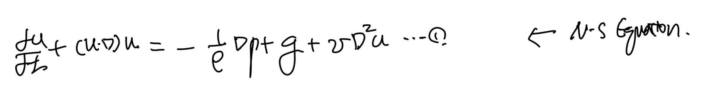
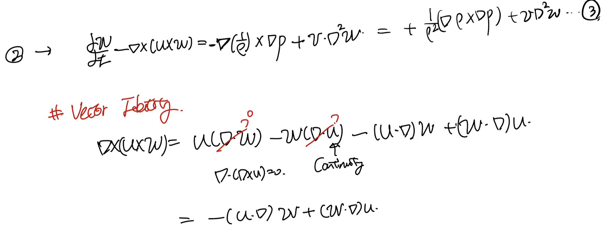
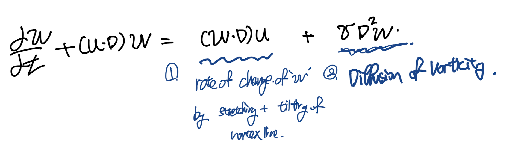
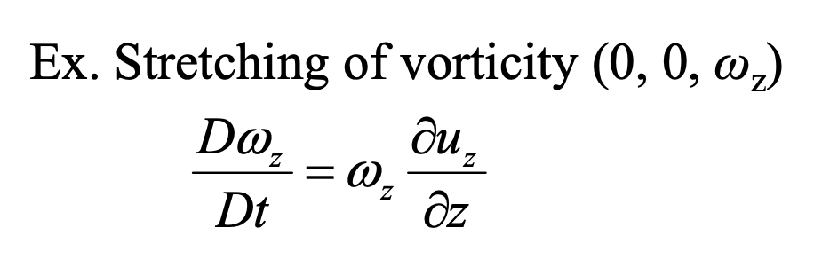
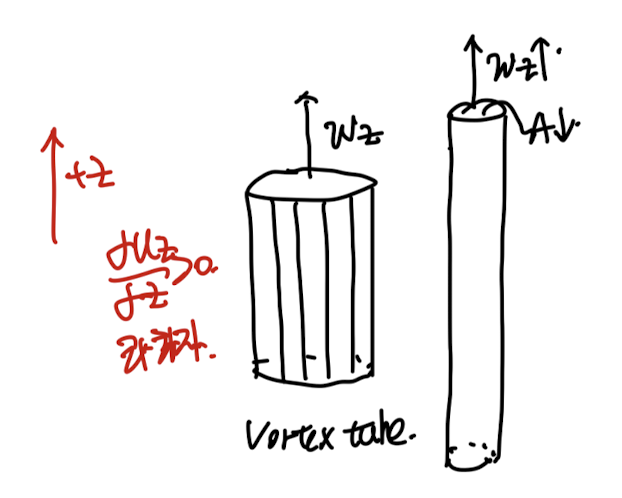
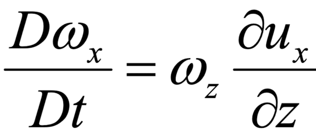
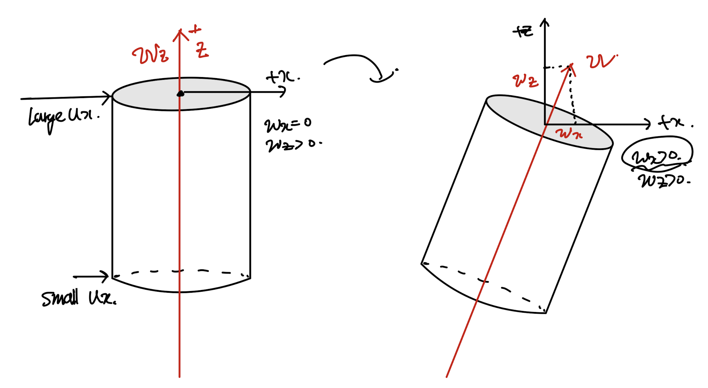

<!DOCTYPE html>
<html lang="ko">
<head>
  <meta charset="utf-8">
  <meta name="viewport" content="width=device-width, initial-scale=1">
  <title>Ch3 Vorticity dynamics_part3_Vorticity Equation(1) | Sehyeog Kim</title>
  <link rel="stylesheet" href="../../../assets/css/style.css">
</head>
<body>
  <!-- Mobile header -->
  <header class="mobile-header">
    <span class="site-title">Sehyeog Kim</span>
    <button class="menu-toggle" aria-label="Menu">&#9776;</button>
  </header>
  <div class="sidebar-overlay"></div>

  <div class="site-wrapper">
    <!-- Sidebar -->
    <aside class="sidebar">
      <div class="sidebar-bg">
        
      </div>
      <div class="sidebar-profile">
        
        <h1 class="profile-name">Sehyeog Kim</h1>
        <p class="profile-bio">AI &amp; Computational Engineering<br>Knowledge Base</p>
        <div class="profile-links">
          <a href="https://github.com/Sehyeogkim" target="_blank" rel="noopener">
            <svg viewBox="0 0 16 16" width="16" height="16" fill="currentColor"><path d="M8 0C3.58 0 0 3.58 0 8c0 3.54 2.29 6.53 5.47 7.59.4.07.55-.17.55-.38 0-.19-.01-.82-.01-1.49-2.01.37-2.53-.49-2.69-.94-.09-.23-.48-.94-.82-1.13-.28-.15-.68-.52-.01-.53.63-.01 1.08.58 1.23.82.72 1.21 1.87.87 2.33.66.07-.52.28-.87.51-1.07-1.78-.2-3.64-.89-3.64-3.95 0-.87.31-1.59.82-2.15-.08-.2-.36-1.02.08-2.12 0 0 .67-.21 2.2.82.64-.18 1.32-.27 2-.27.68 0 1.36.09 2 .27 1.53-1.04 2.2-.82 2.2-.82.44 1.1.16 1.92.08 2.12.51.56.82 1.27.82 2.15 0 3.07-1.87 3.75-3.65 3.95.29.25.54.73.54 1.48 0 1.07-.01 1.93-.01 2.2 0 .21.15.46.55.38A8.013 8.013 0 0016 8c0-4.42-3.58-8-8-8z"/></svg> GitHub
          </a>
        </div>
      </div>
      <nav class="sidebar-nav">
        <a href="/" class="nav-item nav-home">Home</a>
        <span class="nav-label">Categories</span>
        <a href="/blog/agentic-ai/" class="nav-item">Agentic_AI<span class="nav-post-count">8</span></a>
        <a href="/blog/blood-flow-and-metabolism/" class="nav-item">Blood-Flow-and-Metabolism<span class="nav-post-count">12</span></a>
        <a href="/blog/cardiovascular-diseases/" class="nav-item">CardioVascular-Diseases<span class="nav-post-count">8</span></a>
        <a href="/blog/computational-linear-algebra/" class="nav-item">Computational-Linear-Algebra<span class="nav-post-count">15</span></a>
        <a href="/blog/continuum-mechanics/" class="nav-item">Continuum-Mechanics<span class="nav-post-count">9</span></a>
        <a href="/blog/deep-learning/" class="nav-item">Deep-learning<span class="nav-post-count">14</span></a>
        <a href="/blog/finite-element-method/" class="nav-item">Finite-Element-Method<span class="nav-post-count">1</span></a>
        <a href="/blog/fluid-mechanics/" class="nav-item">Fluid-Mechanics<span class="nav-post-count">18</span></a>
        <a href="/blog/gas-dynamics/" class="nav-item">Gas-Dynamics<span class="nav-post-count">24</span></a>
        <a href="/blog/heat-transfer/" class="nav-item">Heat-transfer<span class="nav-post-count">8</span></a>
        <a href="/blog/math/" class="nav-item">math<span class="nav-post-count">0</span></a>
        <a href="/blog/numerical-heat-transfer-and-fluid-flow/" class="nav-item">Numerical-Heat-transfer-and-Fluid-flow<span class="nav-post-count">14</span></a>
        <a href="/blog/solid-mechanics/" class="nav-item">Solid-Mechanics<span class="nav-post-count">25</span></a>
        <a href="/blog/thermodynamics/" class="nav-item">Thermodynamics<span class="nav-post-count">14</span></a>
        <a href="/blog/viscous-flow/" class="nav-item active">Viscous-Flow<span class="nav-post-count">28</span></a>
        <a href="/blog/과학/" class="nav-item">과학<span class="nav-post-count">26</span></a>
        <a href="/blog/취미/" class="nav-item">취미<span class="nav-post-count">2</span></a>
      </nav>
    </aside>

    <!-- Main content -->
    <main class="main-content">
      <div class="breadcrumb">  <a href="/">Home</a><span class="sep">/</span>  <a href="/blog/viscous-flow/">Viscous-Flow</a><span class="sep">/</span>  <span>Ch3 Vorticity dynamics_part3_Vorticity Equation(1)</span></div>
<a href="/blog/viscous-flow/" class="back-link">&larr; Back to Viscous-Flow</a>
<div class="page-header"><h1>Ch3 Vorticity dynamics_part3_Vorticity Equation(1)</h1></div>
<div class="post-meta"><span class="meta-item"><span class="meta-label">Date:</span> 2024-10-09</span><span class="meta-item"><span class="meta-label">Category:</span> Viscous-Flow</span><span class="meta-item"><span class="meta-label">Source:</span> <a href="https://jeffdissel.tistory.com/113" target="_blank" rel="noopener">link</a></span></div>
<article class="post-content"><p>이번 시간에는,<br />
Vorticity Equation<br />
을 유도해보자.<br />
incompressible flow가정으로 Navier's Stokes Equation부터 시작하자.<br />
<br />
1번식에 vector 분해와, 중력가속도를 백터로 바꿔준후, 1식에 대입해주자.<br />
이후, 바로 gradient와 1번식을 외적해주자.(vorticity를 만들기 위해서)<br />
<br />
가장 기본적으로<br />
Gradient(scalar)를 다시 gradient와 외적해주면 zero가 나온다.(직접 전개하면 0)<br />
<br />
압력, 밀도항을 전개해주고, lapace항도 위처럼 바꾸어 주면 밑의 3번식이 도출된다.<br />
<br />
여기서, 마지막으로 백터 identity를 통해서 분해해주면,<br />
<br />
Incompressible or Barotropic Flow(밀도와 압력 gradient 평행)<br />
의 경우,<br />
밀도, 압력 그레디언트 외적 = 0<br />
따라서,<br />
최종적으로<br />
Vorticity Eq<br />
은 다음과 같다.<br />
<br />
여기서 좌항 = Dw/Dt<br />
[total time derivative of vorticty]<br />
위 방정식의 physical meaning을 해석해보자.<br />
시간에 따른 Vorticty의 변화량 =<br />
(우) 1항 + 2항<br />
1항: Rate of Change of vorticity<br />
by stretching + tiliting of Vortex line<br />
2항: Diffusion of vorticty</p>
<hr />
<p>[1항]<br />
먼저 1항의 의미를 이해하기 위해서<br />
Inviscid 가정<br />
을 통해서 2항을 소거해주자.<br />
<br />
핵심은 'vortrex line'<br />
의 Stretching + Tilting이다.<br />
이해를 위해 vorticity Eq을 방향별로 전개해주자.<br />
<br />
<br />
<br />
inviscid Vorticity Eq.<br />
<br />
여기서,<br />
먼저<br />
Stretching<br />
에 대해서 살펴보자.<br />
vorticity 가 z방향만 존재하는 상황에서<br />
z방향의 식은 다음과 같을 것이다.<br />
<br />
위식이 의미하는 것은.<br />
Z방향의 속도 gradient가 존재하다면,<br />
시간에따라서, z방향의 vorticity가 변한다는 것<br />
<br />
위는 fluid element의 예시이고,<br />
Vortex tube로 확인해보면 바로 이해가 갈 것이다.<br />
위 예시처럼<br />
z방향으로 속도 gradient가 존재<br />
한다면,<br />
z방향으로 element들이 모두 늘어나는 것은 자명하다,<br />
따라서 tube도 늘어나게 된다.<br />
<br />
여기서 핵심은,<br />
Tube 단면의<br />
Circulation은 시간에 따라서 변하지 않는다.<br />
(inviscid, conservative Body force, Barotropic Flow 가정)<br />
(Kelvin's Theorem)<br />
<br />
(혹시 저게 뭐지? 라는 의문이 드시면 아래 링크에 자세하게 설명되어 있습니다~)<br />
https://jeffdissel.tistory.com/112<br />
Ch3 Vorticity dynamics_part2_Kelvin's circulation Theorem<br />
지난 시간에circulation, vorticity의 개념에 대해서 배웠다. Closed loop 곡선 C에서 x에서 속도를 u라하자,x+dx 에서 속도는 u+du 일 것이다. 위 상황에서,1. Inviscid flow2. Barotrpoic flow3. Conservative Body force<br />
jeffdissel.tistory.com<br />
시간에따라 Circulation은 일정,<br />
속도의 gradient -&gt; Vorticity(w) 증가<br />
인 상황이라면<br />
Circulation의 정의에 의해서,<br />
면적이 감소<br />
해야함을 알 수 있다.<br />
<br />
Definiton of Circulation.<br />
따라서,<br />
Strecthing<br />
이라는 표현은 정확히<br />
속도gradient &gt;0 인 상황에서 fluid element 가 쭉 늘어남과 동시에,<br />
Vortex tube 의 단면이 줄어들어서<br />
아래 가래떡을 늘인 것같은 Stretching 효과가 나타난다.<br />
<br />
만약에 속도 Gradient&lt;0 이라면,<br />
반대로 길이가 줄어들 것이고, 면적은 늘어나겠죠??<br />
결론적으로,<br />
Z방향의 속도 Gradient<br />
-&gt; z방향 Vorticity를 변화<br />
-&gt; 면적의 감소<br />
-&gt; Vortex Line(tube) Stretching<br />
이제, Tilting 의 의미를 이해해보자.<br />
전개한 Vorticity Equation에서<br />
<br />
위와 정확히 동일한 예시(wz만 존재, wx=wy=0)에서<br />
이제 x,y 방향 component를 살펴보자.<br />
<br />
For simplicity,<br />
위 두 식 중 첫번째,<br />
x방향<br />
식만 살펴보자.<br />
<br />
밑의 그림처럼 du_x/dz &gt;0, wz&gt;0 , wx = 0 인 vortex tube가 존재한다면,<br />
속도차이로 인해서 tube는 (오른쪽으로) 기울어지게 될 것이고,<br />
그로 인해서 w_x &gt;0 으로 바뀌게 된다.<br />
<br />
결론적으로,<br />
u_x 의 z방향으로의 gradient.<br />
-&gt; vortex line(tube)를 기울어지게 함<br />
-&gt; wx의 변화<br />
정리해보면,<br />
Vorticity Equation에서<br />
<br />
inviscid Vorticity Eq.<br />
(w.<br />
∇)u 가 의미하는 것은 전개를 했을 때<br />
<br />
velocity gradient 로 인해서<br />
fluid element 길이변화 or 기울어짐<br />
-&gt; Vortex tube(line) 길이변화 or 기울어짐<br />
-&gt; 최종적으로 Vorticity의 변화로 이어진다.</p></article>
      <footer class="site-footer">
        <p>&copy; 2026 Sehyeog Kim. Built with gitfolio-inspired theme.</p>
      </footer>
    </main>
  </div>

  <script src="../../../assets/js/main.js"></script>
</body>
</html>